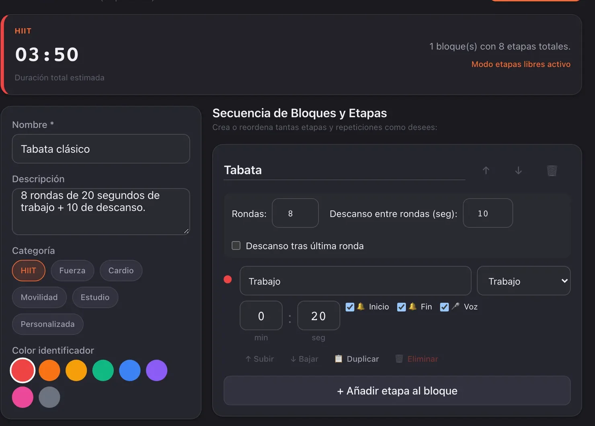
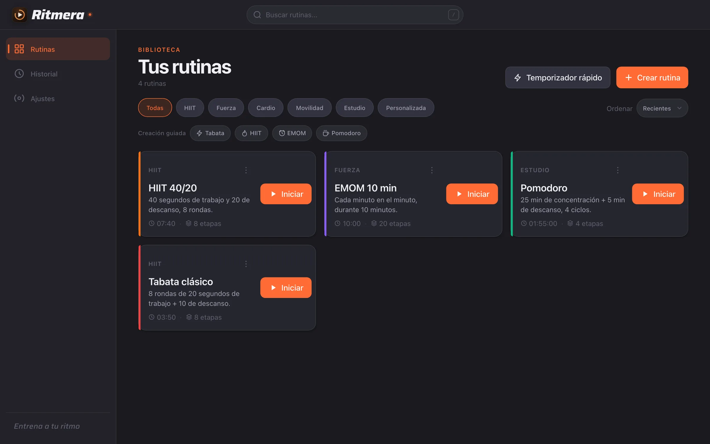
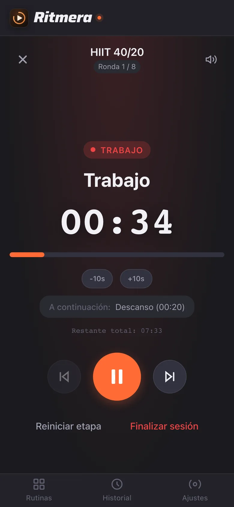
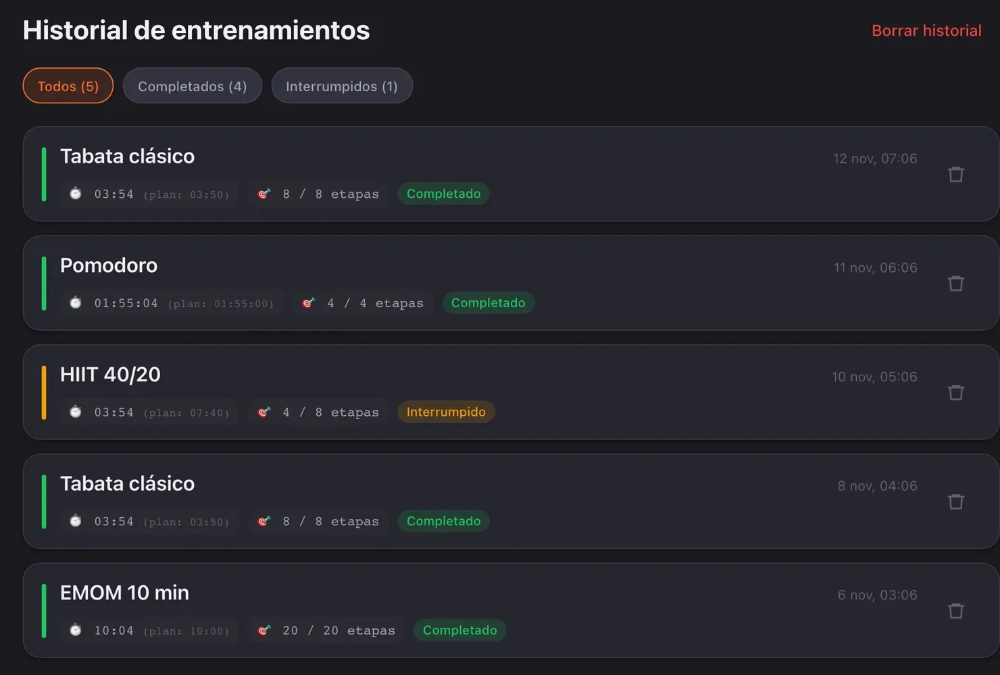

Arma bloques con rondas
Cada bloque repite sus etapas las veces que digas, con descanso entre rondas y la duración total al momento.

Arma rutinas por bloques, con rondas y descansos. Ritmera te avisa con pitidos en cada cambio de etapa, también con el iPhone bloqueado. Gratis, sin cuenta y sin conexión.
Incluye 4 plantillas: Tabata 20/10, HIIT 40/20, EMOM 10 min y Pomodoro 25/5.
Filtra por categoría, busca por nombre o etiqueta y ordena por uso reciente. Cada tarjeta muestra la duración total y las etapas, y empieza con Iniciar.

Cada bloque repite sus etapas las veces que digas, con descanso entre rondas y la duración total al momento.

Un pitido por segundo en los últimos 3 segundos y una alarma al cambiar de etapa, con la pantalla bloqueada.

El historial anota el tiempo real frente al planificado y las etapas hechas, completadas o interrumpidas.

El motor de tiempo dispara los pitidos, anuncia la etapa en voz alta y mantiene la pantalla encendida.
Abre Ritmera en Safari, toca Compartir y elige Añadir a pantalla de inicio. Se abre a pantalla completa y sigue avisando con el teléfono bloqueado.
Nada. Ritmera es gratuita y su código está publicado en GitHub.
No. Abres la app y empiezas; no hay registro ni inicio de sesión.
En tu navegador, con IndexedDB; nada sale del dispositivo. Si borras los datos del sitio se pierden, así que exporta una copia en JSON desde Ajustes.
Los pitidos sí: se programan al iniciar la sesión. La voz solo habla con la app en pantalla.
Sí. En Ajustes eliges de 0 a 10 segundos de cuenta atrás.